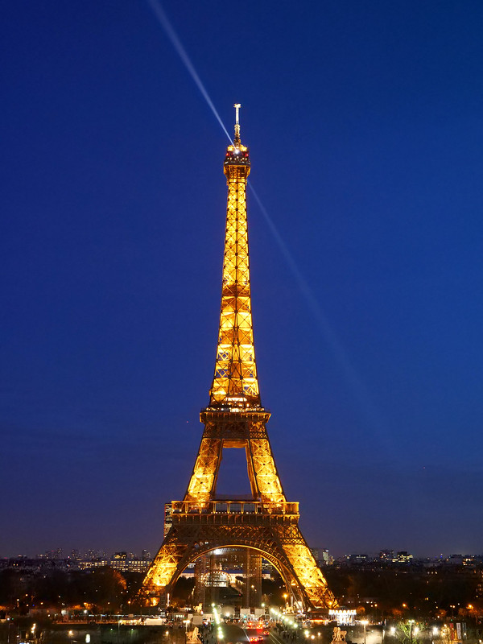
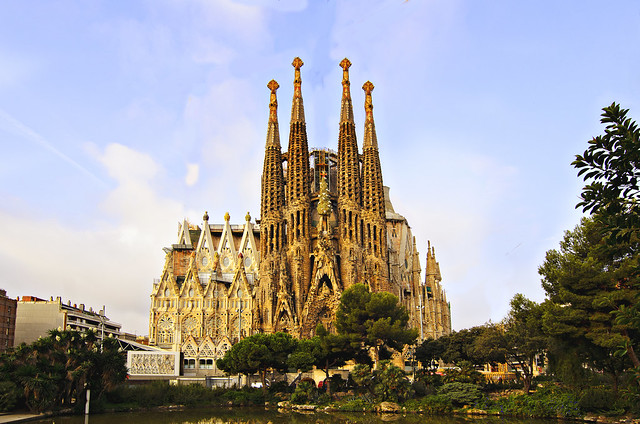
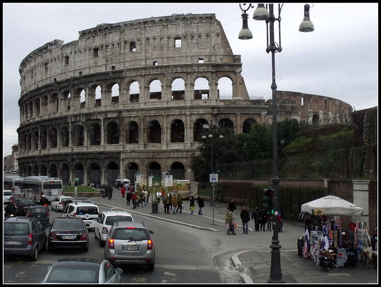

Bem-vindos a Eurotour!
Sobre nós:
Eurotour é um site que ajuda você a planejar sua viagem para a Europa, desde a compra das passagens, até a visito nos pontos turísticos mais importantes de cada região!
Conheça lugares turísticos na Europa
# Torre Eiffel
Torre Eiffel (em francês: Tour Eiffel, /tuʀ ɛfɛl/) é uma torre de treliça de ferro forjado no Champ de Mars, em Paris, França. Tem o nome do engenheiro Gustave Eiffel, cuja empresa projetou e construiu a torre.
Localmente apelidada de "Dama de Ferro" (em francês: La dame de fer), foi construída de 1887 a 1889 como a peça central da Exposição Universal de 1889 e foi inicialmente criticada por alguns dos principais artistas e intelectuais franceses por seu design, mas tornou-se um ícone cultural global da França e uma das estruturas mais reconhecidas do mundo. A Torre Eiffel é o monumento pago mais visitado do mundo; 6,91 milhões de pessoas subiram na torre em 2015. Foi designado um monumento histórico em 1964 e foi nomeado parte do Patrimônio Mundial pela UNESCO ("Paris, Margens do Sena") em 1991.
Como um dos marcos mais emblemáticos do mundo, a Torre Eiffel foi a inspiração para a criação de muitas réplicas e torres semelhantes. Um exemplo precoce é a Torre de Blackpool, na Inglaterra. O prefeito de Blackpool, Sir John Bickerstaffe, ficou tão impressionado ao ver a Torre Eiffel na exposição de 1889 que encomendou uma torre semelhante para ser construída em sua cidade. Foi inaugurada em 1894 e tem 158,1 m de altura.[75] A Torre de Tóquio no Japão, construída como torre de comunicações em 1958, também foi inspirada na Torre Eiffel.
A torre também conta com dois restaurantes: Le 58 Tour Eiffel no primeiro nível, e Le Jules Verne, um restaurante gourmet com elevador próprio no segundo nível.
# Templo Expiatório da Sagrada Família
Templo Expiatório da Sagrada Família (em catalão: Temple Expiatori de la Sagrada Família), também conhecido simplesmente como Sagrada Família, é um grande templo católico da cidade de Barcelona, Catalunha, Espanha, desenhado pelo arquiteto catalão Antoni Gaudí, e considerado por muitos críticos como a sua obra-prima e expoente da arquitetura modernista catalã. Financiado unicamente por contribuições privadas, o projeto foi iniciado em 1882 e assumido por Gaudí em 1883, quando tinha 31 anos de idade, dedicando-lhe os seus últimos 40 anos de vida, os últimos quinze de forma exclusiva. A construção foi suspensa em 1936 devido à Guerra Civil Espanhola[1] e não se estima a conclusão para antes de 2026, centenário da morte de Gaudí.
A Sagrada Família conta com um espaço habilitado como museu, situado na cave do templo, na parte inferior correspondente ao cruzeiro, onde antigamente se situavam as oficinas. Inaugurado a 29 de junho de 1961, mostra planos e desenhos originais de Gaudí, maquetes do templo e diversos objetos relacionados com o projeto, destacando-se os móveis litúrgicos desenhados por Gaudí. Também se destaca a maquete polifunicular invertida de cordel e pesos para calcular a estrutura do edifício e desenhar a forma da igreja da Colónia Güell à escala 1/15, na qual Gaudí se baseou para muitas das soluções estruturais da Sagrada Família. Foi também reabilitado o espaço formado pelas Escolas da Sagrada Família, recentemente instaladas num lateral da fachada da Paixão, para exposição dedicada nomeadamente às múltiplas soluções estruturais concebidas por Gaudí, com especial ênfase nos seus estudos geométricos. O Museu conta igualmente com uma sala dedicada aos colaboradores do arquiteto, bem como uma de audiovisuais. Além das amostras referentes à Sagrada Família também se exibem diferentes objetos, planos, desenhos e fotografias sobre as diversas obras de Gaudí, bem como testemunhos biográficos do arquiteto. Também se realizam exposições temporárias dedicadas a diferentes aspetos do projeto de Gaudí.[74]
# Coliseu, na Itália
Coliseu (em italiano: Colosseo), também conhecido como Anfiteatro Flaviano (em latim: Amphitheatrum Flavium; em italiano: Anfiteatro Flavio), é um anfiteatro oval localizado no centro da cidade de Roma, capital da Itália. Construído com tijolos revestidos de argamassa e areia, e originalmente cobertos com travertino[1] é o maior anfiteatro já construído e está situado a leste do Fórum Romano.
Os jogos inaugurais do Coliseu tiveram lugar no ano 80, sob o mandato de Tito, para celebrar a finalização da construção. Depois do curto reinado de Tito começar com vários meses de desastres, incluindo a erupção do Vesúvio de 79, um incêndio em Roma em 64 e um surto de "peste", o mesmo imperador inaugurou o edifício com jogos pródigos que duraram mais de cem dias, talvez para tentar apaziguar o público romano e os deuses. Nesses jogos de cem dias teriam ocorrido combates de gladiadores, "venationes", lutas de animais, execuções, batalhas navais, caçadas e outros divertimentos numa escala sem precedentes.[12]
Fonte do texto: wikipedia